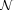
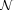
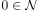

Menge der Nilpotenten Element als Ideal
1. Satz
Sei  ein Ring und  die Menge der nilpotente Elemente.
Dann ist ein ideal
ein Ring und  die Menge der nilpotente Elemente.
Dann ist ein ideal
2. Beweis
2.1. abelsche Untergruppe
Nach dem Kriterium für eine Untergruppe ist zu zeigen:
2.1.1. nichtleer
folgt aus 